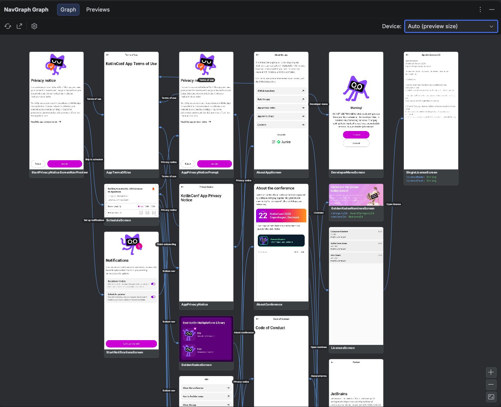

Getting Started¶
The Compose Navigation Graph Gradle plugin (com.github.skydoves.navgraph) wires the whole toolkit into your build. When applied, it adds the compose-nav-graph-annotations and compose-nav-graph-ksp dependencies, registers the KSP processor that statically extracts your nav graph, sets up device free thumbnail rendering, and registers the nav tasks (generateNavGraph, navDump / navCheck, the HTML and PNG exports, and the preview gallery). It supports Kotlin Multiplatform and multi module projects.
The toolkit is not tied to Navigation 3. Navigation 3 NavKey destinations are picked up automatically, and any other class wires in through the annotations: Navigation 2 routes, or even plain Activities referenced by @NavEdge or @NavPreview, become nodes without implementing NavKey. An existing app lights up without refactoring.
One shot setup with AI
Want everything wired up for you? Paste plugin-agent-guides.md into your LLM (Claude Code, Cursor, Gemini CLI, ...) as-is. It applies the Gradle plugin, annotates your screens, and generates your first graph for you.
Repositories¶
The plugin is published to Maven Central, so make sure mavenCentral() is in your plugin repositories in settings.gradle.kts:
pluginManagement {
repositories {
google()
mavenCentral()
gradlePluginPortal()
}
}
Apply the Plugin¶
Apply the plugin together with KSP in the build.gradle.kts of the module that hosts your navigation (your :app, or each feature module that declares destinations):
plugins {
id("com.google.devtools.ksp") version "<ksp-version>"
id("com.github.skydoves.navgraph") version "0.1.1"
}
That's the whole setup. Sync your project and the plugin is active.
Auto dependency wiring
Applying the plugin automatically adds com.github.skydoves:compose-nav-graph-annotations (as implementation) and com.github.skydoves:compose-nav-graph-ksp (as ksp) at the plugin's own version, so you don't declare them yourself. When the Robolectric render backend is in play, the plugin also adds its testing runtime and Robolectric to the unit test classpath for you. KSP is the one thing the plugin can't apply for you: its version is tied to your Kotlin version, so you apply com.google.devtools.ksp explicitly. If you'd rather manage the dependencies yourself, set navgraph { autoDependencies = false } (see Configuration).
Using a version catalog¶
If you keep plugin versions in libs.versions.toml:
[plugins]
ksp = { id = "com.google.devtools.ksp", version = "<ksp-version>" }
navgraph = { id = "com.github.skydoves.navgraph", version = "0.1.1" }
plugins {
alias(libs.plugins.ksp)
alias(libs.plugins.navgraph)
}
Annotate Your Screens¶
The plugin extracts the graph from four annotations. At minimum, mark the composable that renders a destination with @NavDestination(route) and link a @Preview to it with @NavPreview(route) so the node gets a thumbnail:
@NavDestination(route = Profile::class)
@Composable
fun ProfileScreen(state: ProfileState) { /* … */ }
@NavPreview(route = Profile::class, primary = true)
@Preview
@Composable
fun ProfileScreenPreview() {
ProfileScreen(ProfileState.Preview)
}
The route can be any class; it does not need to implement NavKey. See Annotations for the full set, including @NavEdge (transitions) and @NavGraphRoot (start destination), and how a route's serializable properties become the node's typed arguments.
Generate the Graph¶
Run the entry point task on the module you want to inspect:
./gradlew :app:generateNavGraph
This task:
- Runs KSP to extract each module's nodes, typed arguments, and
@NavEdgetransitions. - Renders every
@NavPreviewscreen to a PNG thumbnail, device free: Layoutlib first, with a Robolectric fallback for previews Layoutlib can't handle (tunable viarenderBackend). No emulator or device required. - Aggregates the nav graphs of this module's dependency modules into one combined graph (
aggregateNavGraph, on by default), so an umbrella:appthat depends on every feature module gets the whole app's graph. - Writes the result to
build/navgraph/nav-graph.json, with thumbnails underbuild/navgraph/thumbs/.
app/build/navgraph/
├── nav-graph.json # the merged graph (nodes, args, edges, thumbnail refs)
└── thumbs/ # one PNG per rendered @NavPreview
The IDE plugin reads this output to draw the NavGraph Graph tool window:

You can also feed it straight to exportNavGraphHtml / exportNavGraphImage for a shareable graph, or gate PRs on it with the .nav baseline.
Structure only mode
Thumbnail rendering needs Android. For Kotlin Multiplatform modules without an Android target, or whenever you only want the graph shape and not the screenshots, set navgraph { renderThumbnails = false }. Extraction (nodes, args, edges) still runs; the graph schema and IDE reader handle thumbnail-less nodes.
Generate the Preview Gallery¶
The same render pipeline can also produce a gallery of every @Preview in your project, not just the annotated screens, grouped by module and package:
./gradlew :app:generatePreviewGallery # render every @Preview into build/navgallery
./gradlew :app:exportPreviewGalleryHtml # a standalone HTML gallery
./gradlew :app:exportPreviewGalleryImage # a single PNG contact sheet
These tasks are on demand only: they never run as part of generateNavGraph or check. See Export for the details.
See Real Generated Output¶
Curious what the generated artifacts look like on real apps? The nav-results/ directory contains committed exports from real-world projects (the KotlinConf app, Now in Android, and SimpMusic): full navigation graph PNG exports under nav-results/nav-graphs/ and preview galleries under nav-results/preview-gallery/.